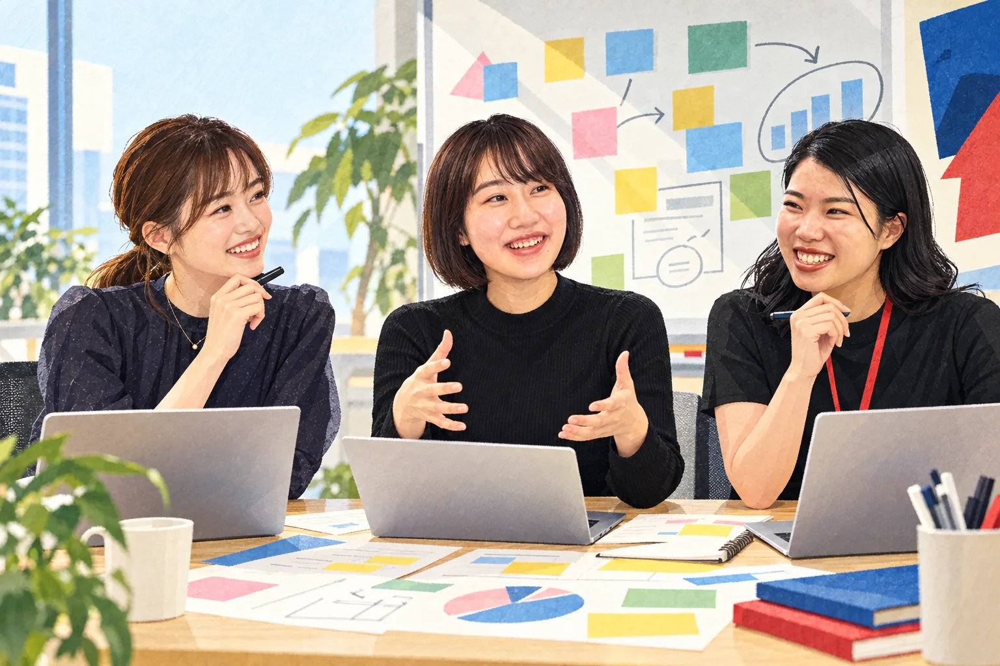
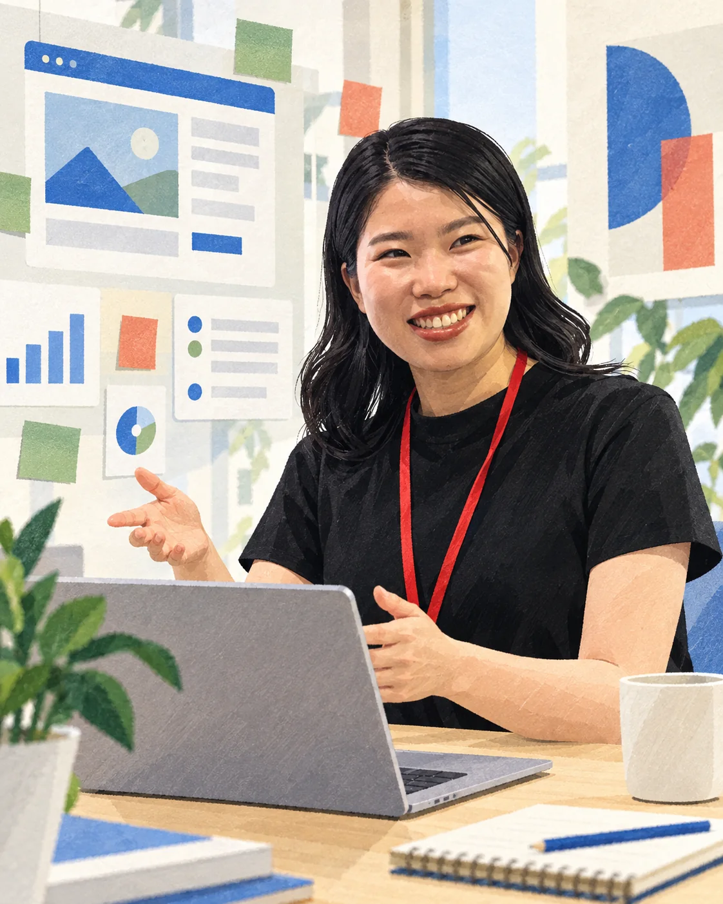
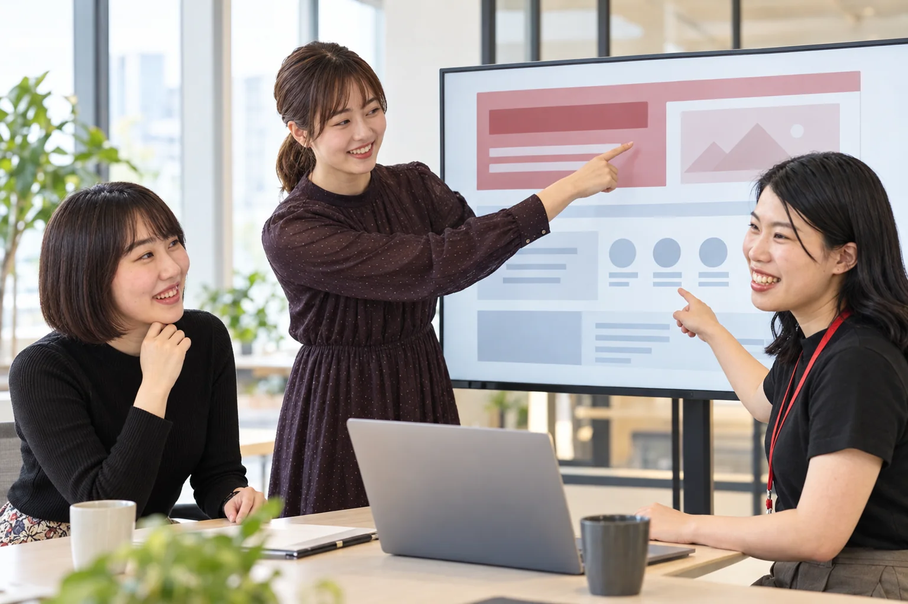
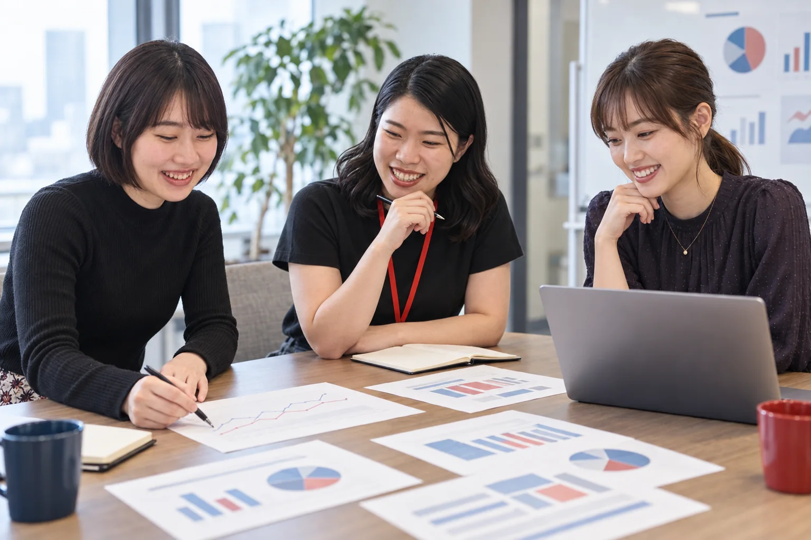

SAAS TEAM
西村 果林
株式会社ライトアップ
TEAM INTERVIEW ／ PRODUCT BUILDING
売る。聞く。直す。また届ける。西村・木場・小松の3人が、毎週の会議でプロダクトと届け方を一緒に育てています。

つくって終わりではなく、届いて、使われるところまで。
本人写真を参照した生成イラストです。実際の会議写真ではありません。
THE TEAM
企画、ページ制作、営業、データ確認。担当を細かく切り離すのではなく、顧客の声を中心に必要な仕事をつないでいくチームです。
株式会社ライトアップ

株式会社ライトアップ

株式会社ライトアップ
※ 掲載ビジュアルは、本人のプロフィール写真を参照して制作した生成イラストで、実際の写真ではありません。
STORY IN ONE MINUTE
※ 文字起こしに話者ラベルがないため、以下の回答は個人へ帰属させず「SaaSチーム」として編集しています。
CHAPTER 01 ／ ONE PRIORITY
定例の冒頭、話はすぐに「いま最優先で動かすもの」へ向かいました。
今日は、どこから始めましょうか。
まずはJマッチエンジンです。ここを最優先にします。営業も「今月だけでも100件取る」くらいの気持ちで動くので、打ち合わせもここから始めた方がいいと思います。
モニター募集やハウスリストの改善もあります。全部、大事ですよね。
はい。ただ、同じ強さで全部を進めると、どれも顧客へ届く前に薄くなってしまいます。まず一つを「今週いちばん動かすもの」と決めて、ほかは止めずに順番をつくります。

開発の定例なのに、営業の話が最初に出るのが印象的です。
つくって終わりではなく、届いて、使われるところまでが開発だと考えています。営業で聞いた反応が、次のページや機能を決める材料になります。
今月、本気で届ける一つを決める。会議で確認された方針を、外部向けに編集
最優先のプロダクトと、届けたい相手をそろえる。
営業、ページ、案内文を同じメッセージにする。
クリック、申込、現場の声を受け取る。
反応を次のページと機能へ戻す。
CHAPTER 02 ／ TWO READERS
次の議題は、Elliotのモニター募集ページ。最初の感想から、ページの役割そのものへ話が深まっていきます。
いいですね。まず、数字をもっと大きくしたいです。「1年間」「0円」のような大事な条件が、ぱっと目に入るように。
はい。GoogleのWebフォントも入れて、デフォルト感をなくします。アップするときの抜け漏れも、制作ルールとして残しておきます。
下がかなり長くなっていますね。もっと短くした方がいいでしょうか。
文字が多いこと自体が問題ではないと思います。最初に見る経営者は、見出しだけで「いいね、やろう」と判断できる。担当者へ転送されたら、その人は下まで順番に読む。二つの読み方を一枚の中につくります。

担当者向けの下半分には、何が必要ですか。
機能一覧、導入に必要なもの、導入手順。それから「社内にはこう伝えると喜ばれます」という案内です。そのまま担当者向けの導入マニュアルとして使えるところまで持っていきたいです。
なるほど。削るより、読む順番を設計するんですね。
はい。上半分で経営者の意思決定を助けて、下半分で担当者の実務を助ける。一枚のページに、二つの役割を持たせます。
短くするのではなく、読む順番をつくる。
CHAPTER 03 ／ MEASURE THE NEXT MOVE
ハウスリストの管理画面を見ながら、チームは「数字が見える」の一歩先を話し始めました。
クリック数とクリック率が見えるようになったんですね。いいじゃないですか。
はい。ただ、日付がまだ入っていません。何通目の原稿で反応したのかも、すぐ分かるようにしたいです。
なぜ「何通目か」が大事なんでしょう。
最初の1通で動く人ばかりではないからです。12通目や32通目で、ようやく反応が出るかもしれない。それなら、継続して届けたこと自体に価値があります。

クリックが分かれば、それで十分ですか。
もう一段ほしいです。一日で何通送り、何人がクリックし、何人が応募したのか。そこまで並ぶと、件名だけでなく、送る順番や間隔まで見直せます。
毎週、AIにその結果を読ませることもできますね。
できます。日々の配信結果を残して、毎週の分析へつなぐ。反応を集めるだけでなく、次に何を変えるかまで分かる状態にします。
DAILY FEEDBACK BOARD
毎日の数字を、毎週の改善へ。
CHAPTER 04 ／ QUARTERLY KNOWLEDGE
導入方法を説明しようとしたとき、「必要な情報はあるのに、探しづらい」という実感が共有されました。
説明動画を撮ろうとすると、導入ページや資料がいくつかに分かれていて、探しづらいことがあります。
SlackにもDriveにも、必要な情報はあります。AIに徹底的に探してもらえば、今ある材料から一つの説明をつくれます。ただ、元の情報が散らばったままだと、毎回探す時間がかかります。
それなら、一度全部まとめてしまえばいいですか。
一度まとめても、プロダクトが変わればまた古くなります。月次では忙しすぎるので、四半期ごとに最新情報を選び直すのがよさそうです。
四半期のフォルダには、何を置きますか。
製品ごとに分けて、いま使う説明、動画、導入手順だけを置きます。入口はSaaSのポータルにまとめて、クリックすれば最新のフォルダへ進めるようにします。
AIが全部決める運用ですか。
AIは探して、候補を集めるところまでです。どれを最新情報として公開するか、内容が正しいかは、人が確認します。
情報を永久保存するだけではなく、いま顧客へ見せる情報を定期的に選び直す。AIは探索と整理を支え、人が公開可否と正しさを確認します。
この日の会議で話されたのは、機能の数よりも、届け方と学び方でした。ライトアップのSaaSチームは、顧客へ届けるところから開発を始め、反応を受け取って、また次の形へ戻していきます。
※ 本記事は2026年9月11日に行われたSaaSチーム定例ミーティングの記録をもとに、言い直し・重複・音声認識上の誤変換を整理し、顧客向けの編集記事として再構成したものです。話者の切り替わりが不明瞭な箇所は個人へ帰属させず、「SaaSチーム」の発言として表示しています。「AI面接」「相見積もりAI」は会議時点の検討アイデアであり、提供中のサービスや確定した仕様ではありません。掲載ビジュアルは本人写真を参照した生成画像で、実際の会議写真ではありません。